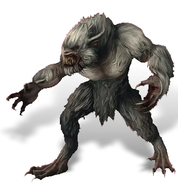
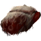
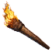

Открыть в интерактивной вики →

| Уровень | лёгк. 100 / норм. 120 / тяжел. 150 |
|---|---|
| Зоны атаки | ближняя, дальняя, ментальная |
| Шанс дропа 100% — уровни | лёгк. 1-80 / норм. 1-80 / тяжел. 1-100 |
| Шанс дропа 90% — уровни | лёгк. 81-95 / норм. 81-95 / тяжел. 101-115 |
| Шанс дропа 70% — уровни | лёгк. 96+ / норм. 96+ / тяжел. 116+ |
| Группа боссов | Страх |
| Сила (PvE) | лёгк. 4793 / норм. 8988 / тяжел. 12 491 |
| Аспект арены | Yantrei |
| Здоровье | лёгк. 20 000 / норм. 55 000 / тяжел. 110 000 |
| Мана | лёгк. 3000 / норм. 3000 / тяжел. 10 000 |
| Выносливость | лёгк. 6000 / норм. 6000 / тяжел. 10 000 |
Навыки


Дроп
 Средняя Фляга Мощи
Средняя Фляга Мощи  Средняя Фляга Силы
Средняя Фляга Силы  Средняя Фляга Здоровья
Средняя Фляга Здоровья  Корундовый ингибитор
Корундовый ингибитор 
Труп вендиго Элементарный глиф
Элементарный глиф  Ученический глиф
Ученический глиф 
 Путь страха
Путь страха 


 III-VI
III-VI  Гроссмейстерский глиф
Гроссмейстерский глиф  Даймонит 15
Даймонит 15 | Рары | Синергетики | Эпики |
 Рары Рары  Рары Рары  Рары Рары  Рары Рары | 30-80 ур. |  Эпики Эпики |
Прочее:  Путь страха Путь страха  Труп вендиго Труп вендиго  Элементарный глиф Элементарный глиф  Ученический глиф Ученический глиф  Средняя Фляга Мощи Средняя Фляга Мощи  Средняя Фляга Силы Средняя Фляга Силы  Средняя Фляга Здоровья Средняя Фляга Здоровья  Корундовый ингибитор Корундовый ингибитор | ||
Требования для входа
все сложности:
лёгк.: item169s
норм.: Приманка для Вендиго
Приманка для Вендиго
тяжел.:Приманка для Вендиго Путь страха

Факел ×1лёгк.: item169s
норм.:
Приманка для Вендиготяжел.:
Приманка для Вендиго Путь страхаПуть по картам
Статистика
 |  |  |
| Уровень: 100 | Уровень: 120 | Уровень: 150 |
Здоровье: 20 000 Мана: 3 000 Выносливость: 6 000 | Здоровье: 55 000 Мана: 3 000 Выносливость: 6 000 | Здоровье: 110 000 Мана: 10 000 Выносливость: 10 000 |
Умения
| Удар Головой Укус Обычная атака | Бросок камнем | Ярость Боевой Клич Рёв |
Иммунитеты / особые умения
-
Команда
-
Локация
Логово Вендиго
Плато Дмортер
Ущелье Дмортер